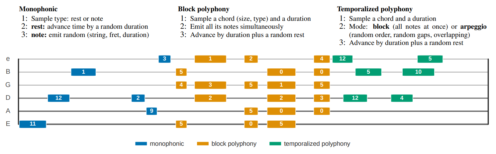
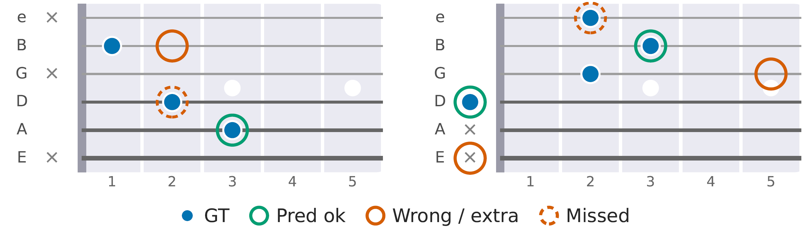
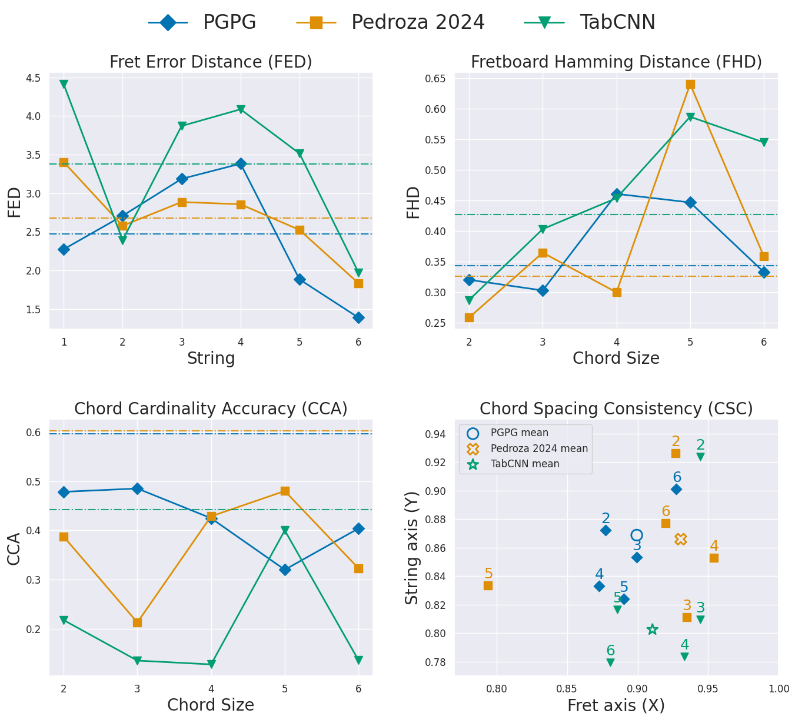

Abstract
Automatic guitar tablature transcription suffers from limited data. We propose a method that generates synthetic training data by randomly sampling guitar playing parameters from distributions, covering the parameter space of possible guitar configurations rather than rendering musical patterns found in guitar tablatures of real music. Using banks of pre-recorded real guitar tones, we create diverse polyphonic data. Models trained with our data method achieve competitive or state-of-the-art performance on real-world evaluation.
We also introduce novel fine-grained metrics that capture string-level and chord-level behavior, providing deeper insights into fret localization accuracy and chord structure consistency that standard classification metrics cannot reveal.
Data generation
Labels are correct by construction, and volume is not limited by annotated music. Acoustic diversity is bounded by the variability of the single-note recordings (IDMT-SMT, EGFXSet, Guitar-TECHs). The final training set is about 84 h of audio. We release the framework, not the generated data.
- Monophonic sequences
- Random (string, fret) notes with random durations, separated by silences.
- Block polyphony
- Chords of 2 to 6 notes on distinct strings, played at once. Chord types range from position-feasible and non-barre to unconstrained.
- Temporalized polyphony
- Each chord is played as a block or as an overlapping arpeggio with random order and gaps.

Fine-grained metrics
Precision, recall and F1 treat every wrong label as equally bad. Four complementary metrics add detail:
- Fretboard Hamming Distance (FHD)
- How much of the fretboard is wrong.
- Fret Error Distance (FED)
- How far, in frets, a wrong prediction is from the truth.
- Chord Cardinality Accuracy (CCA)
- Whether the number of sounding strings is right.
- Chord Spacing Consistency (CSC)
- Whether the fret and string spans of the chord are preserved.

| Metric | Definition | Calculation | Result |
|---|---|---|---|
| FED ↓ | Mean absolute fret error over active strings | (0 + 0 + 0 + 1 + 0) / 5 | 0.20 |
| FHD ↓ | Fraction of strings with an incorrect fret class | 2 / 6 | 0.33 |
| CCA ↑ | Fraction of chords with correctly predicted cardinality | GT = 5, Pred = 6; 0 / 1 | 0 |
| CSC ↑ | Chord-spacing consistency in fret (X) and string (Y) spans | X = 1 − 0/20; Y = 1 − 1/5 | (1.00, 0.80) |
Results
All models are evaluated out of domain on EGSet12. PGPG is trained only on procedurally generated data.
Standard metrics
| Model | Multi-pitch | Tablature | TDR | ||||
|---|---|---|---|---|---|---|---|
| P | R | F1 | P | R | F1 | ||
| PGPG (ours) | 0.906 | 0.750 | 0.821 | 0.645 | 0.562 | 0.601 | 0.712 |
| Pedroza 2024 | 0.904 | 0.711 | 0.788 | 0.644 | 0.528 | 0.576 | 0.732 |
| TabCNN | 0.883 | 0.496 | 0.635 | 0.655 | 0.369 | 0.472 | 0.741 |
Fine-grained metrics
| Model | FED ↓ | FHD ↓ | CCA ↑ | CSC (X, Y) ↑ |
|---|---|---|---|---|
| PGPG (ours) | 2.469 | 0.343 | 0.596 | 0.899, 0.868 |
| Pedroza 2024 | 2.680 | 0.326 | 0.602 | 0.930, 0.865 |
| TabCNN | 3.374 | 0.426 | 0.442 | 0.910, 0.802 |
PGPG has the lowest fret error and a more stable spacing consistency across chord sizes (2 to 6 notes). Pedroza 2024 is slightly better on FHD, CCA and fret-axis CSC.

Audio examples
Citation
@inproceedings{pedroza2026pgpg,
title = {{PGPG}: Covering the Parameter Space of Guitar Playing for Improved Tablature Transcription},
author = {Pedroza, Hegel and Gonz{\'a}lez, Jes{\'u}s H. and Rom{\'a}n, Iran R.},
booktitle = {Proceedings of the Latin American Music Information Retrieval Workshop (LAMIR)},
address = {Belo Horizonte, Brazil},
year = {2026}
}